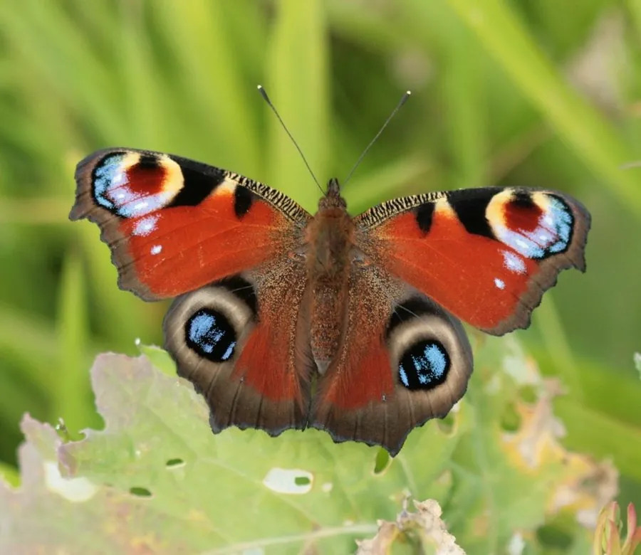

昆虫 · 动物界
孔雀蛱蝶 Aglais io

翅面有四个巨大孔雀眼斑的蛱蝶，受惊时展开翅膀吓退天敌，广布欧亚大陆，是最著名的眼斑蝴蝶之一。
- 分类
- 门节肢动物门纲昆虫纲目鳞翅目科蛱蝶科属蛱蝶属
- 栖息环境
- 花园、公园、草地和林缘，荨麻生长的地方
- 地理分布
- 欧洲和亚洲温带地区
- 保护级别
- 暂无评估
物种志
孔雀蛱蝶翅展约 5–6.5 cm，翅面深红褐色，前翅和后翅各有一个巨大的眼斑，眼斑中央深黑，外围有蓝、黄、红色环纹，像孔雀羽毛上的眼睛。翅腹面颜色暗褐，停歇时像枯叶，可以隐蔽。
它生活在花园、草地、林缘和公园，成虫喜欢访花，秋季会吸食果实汁液。雌蝶把卵产在荨麻叶片上，幼虫群集取食荨麻，身体黑色带刺。孔雀蛱蝶广布欧洲和亚洲温带地区，一年发生多代，以成虫越冬。它的蛹为灰褐色，挂在荨麻茎叶间，冬季成虫常躲在树洞里越冬。它的幼虫体表有刺毛。遇到鸟类袭击时，它会突然展开翅膀露出四个眼斑，并摩擦翅膀发出声音，把天敌吓退，是眼斑防御的经典例子。
形态与习性
- 食性幼虫取食荨麻；成虫吸食花蜜和果汁
- 翅展约 5–6.5 cm
- 识别翅面有四个巨大的孔雀眼斑
- 防御受惊时展开翅膀露出眼斑吓退天敌
- 分布欧洲和亚洲温带地区
趣味知识
- 孔雀蛱蝶翅膀上的眼斑像孔雀羽毛，因此得名。
- 受到鸟类袭击时，它会突然展开翅膀露出眼斑。
- 它还会摩擦翅膀发出声音，配合眼斑一起吓退天敌。